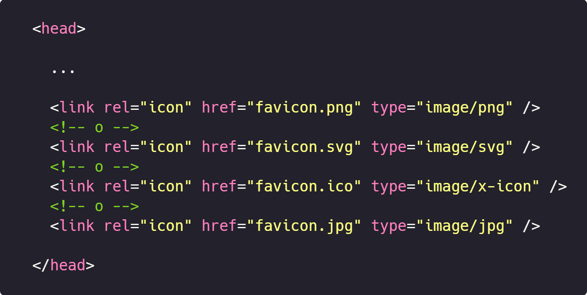

El favicon es un pequeño icono que identifica un sitio web cuando está abierto en una pestaña o cuando es guardado como favorito.
El tamaño estándar de este icono es de : 16px * 16px, o 32px *32px. Y aunque el navegador lo escalará, es mejor si lo subes al servidor con un tamaño reducido, digamos 64x64.
Este código tiene que ir en la parte del head de nuestro sitio web
Valen al menos los formatos PNG, SVG, ICO, JPG.
